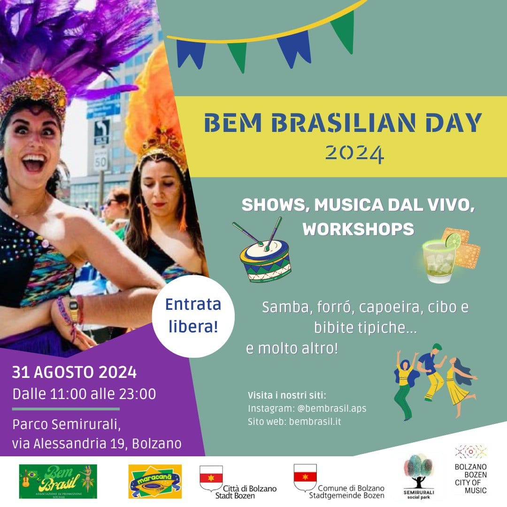
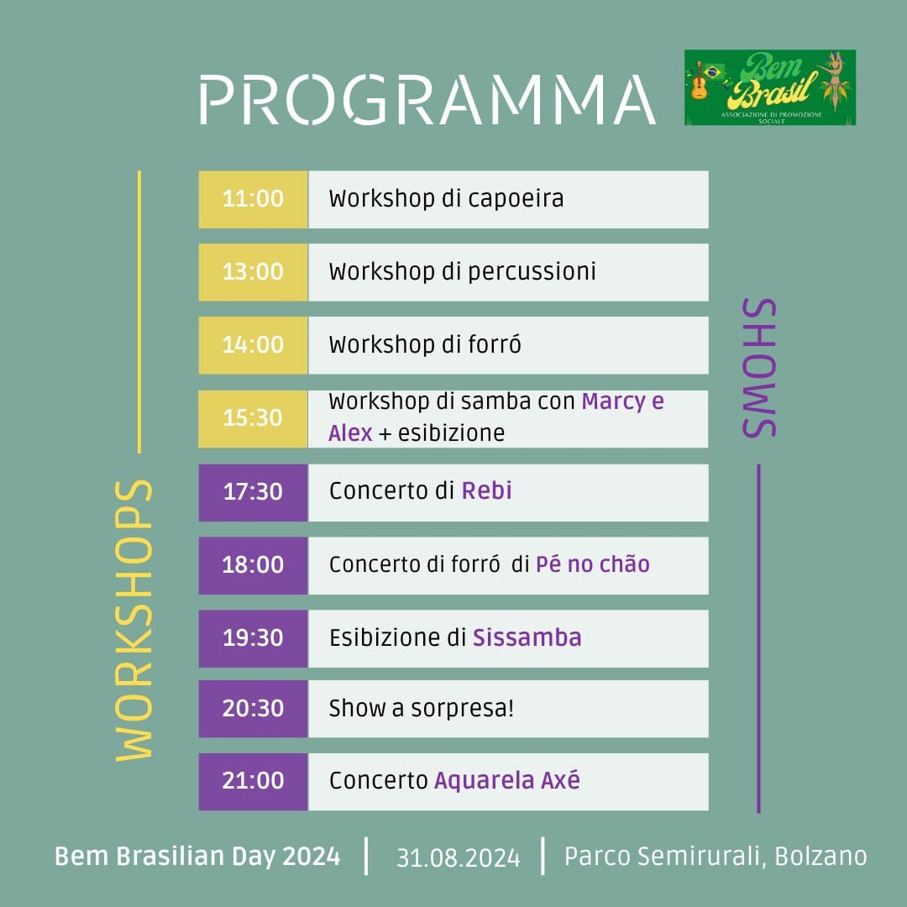

Bem Brasilian Day
Il sabato 31 agosto 2024, dalle ore 9:30 alle 23:30 si terra il terzo Bem Brasilian Day al parco Semirurali a Bolzano. via Alessandria 15, Bolzano

PROGRAMMA con orari

Tornate qui per trovare più informazioni nei prossimi giorni… :)
@capoeira_sdb_bolzano_brescia
@marcysambashow
@forropenochao
@sissambabz
@aquarelaaxe
Desideriamo ringraziare a: